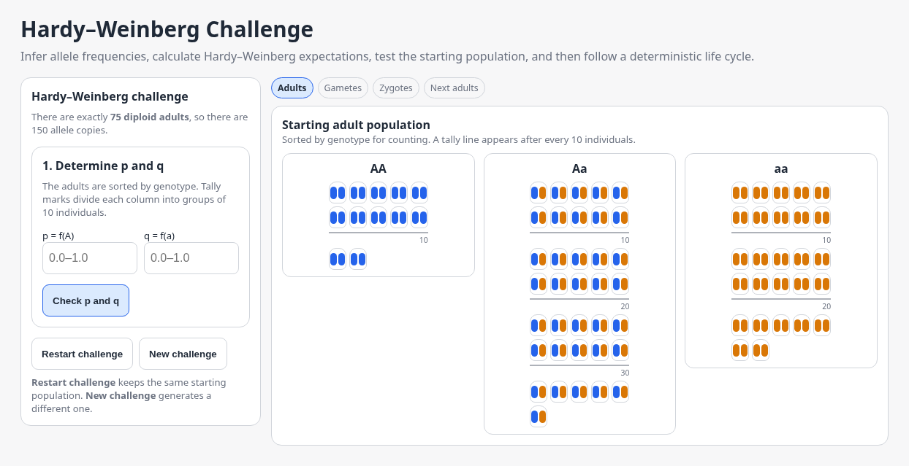
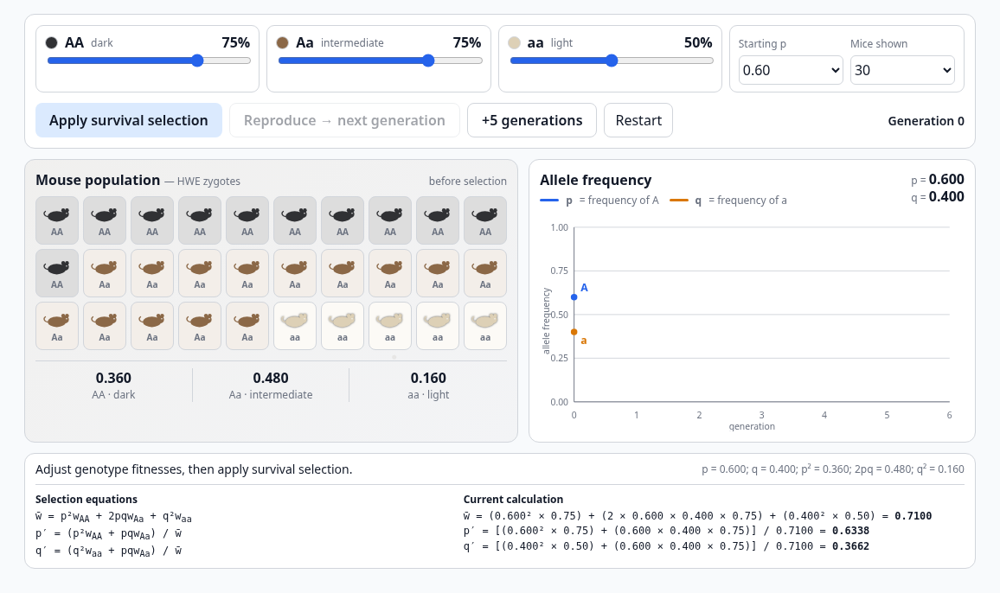
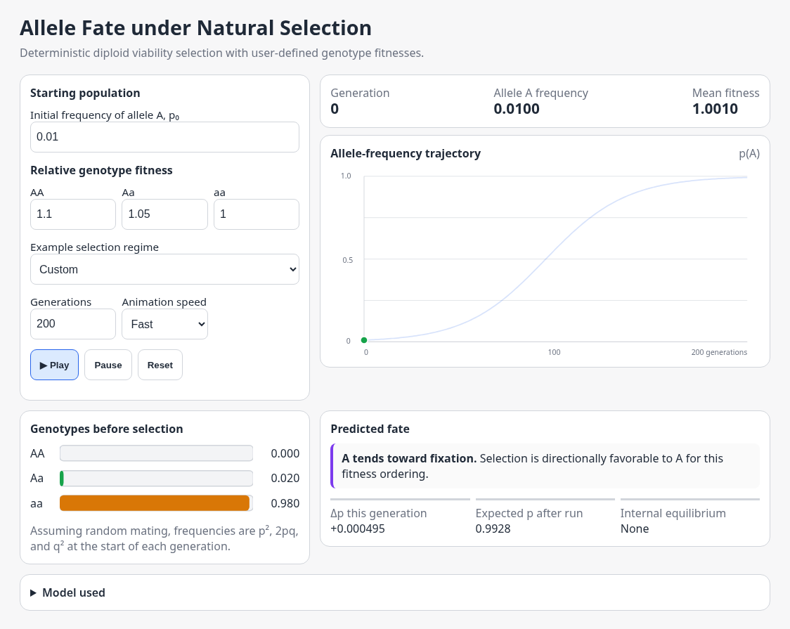
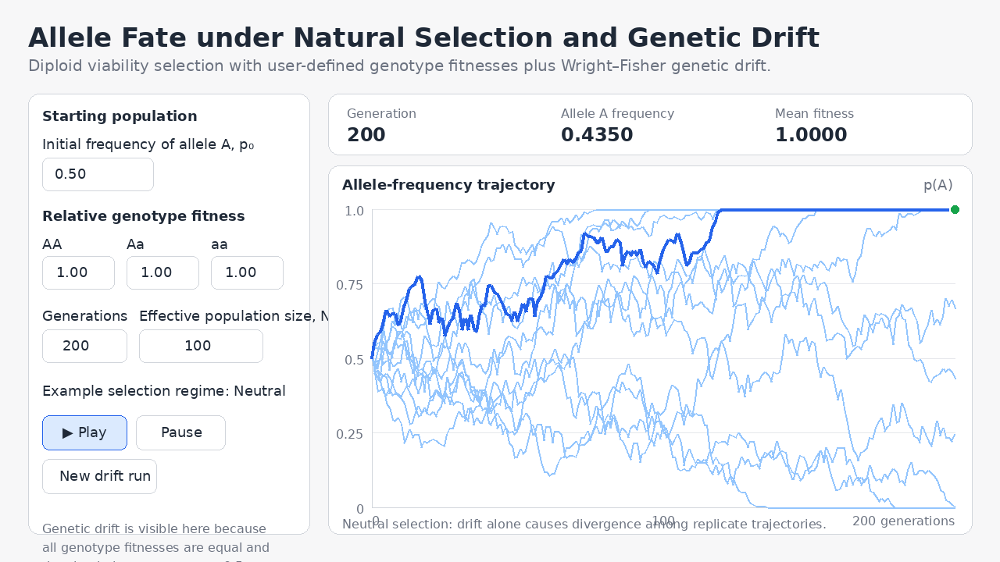
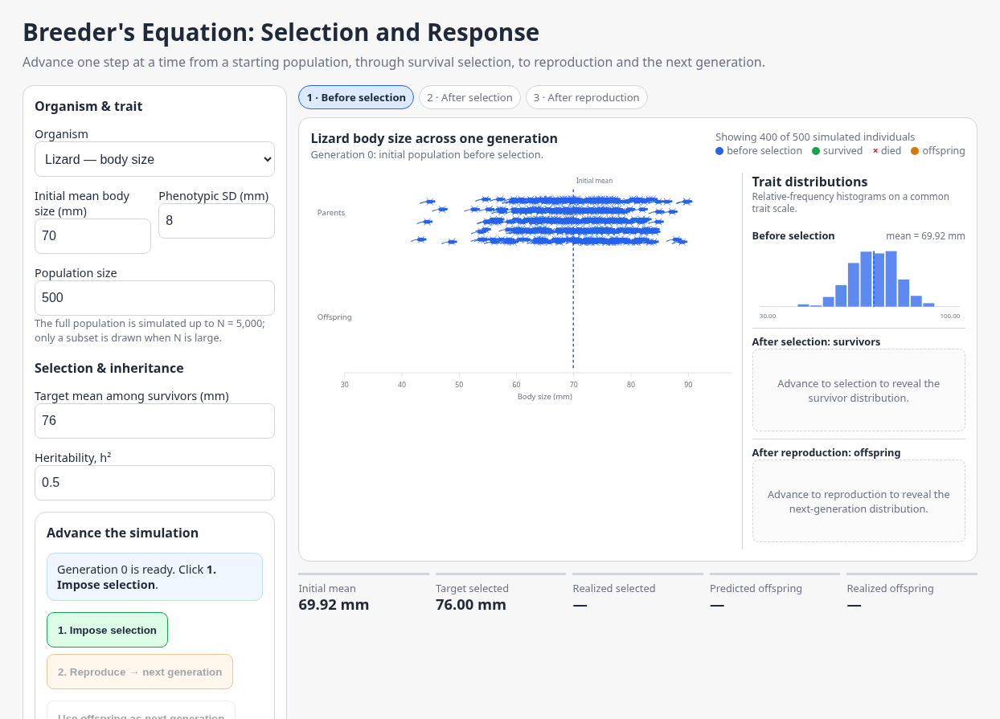

Evolutionary Theory
Interactive models for exploring allele frequencies, Hardy–Weinberg equilibrium, natural selection, and response to selection.

Hardy–Weinberg Challenge
Infer allele frequencies, calculate HWE expectations, test a starting population, and follow the life cycle.
Open interactive →
Survival Selection: Mice & Allele Frequencies
Apply genotype-specific survival and follow changes in genotype composition and allele frequencies.
Open interactive →
Allele Fate under Natural Selection
Explore deterministic diploid viability selection and allele-frequency trajectories under different fitness schemes.
Open interactive →
Allele Fate under Natural Selection and Genetic Drift
Combine diploid viability selection with Wright–Fisher drift and explore how effective population size changes allele-frequency trajectories.
Open interactive →
Breeder's Equation: Selection and Response
Move from a starting population through selection and reproduction while comparing predicted and realized response.
Open interactive →